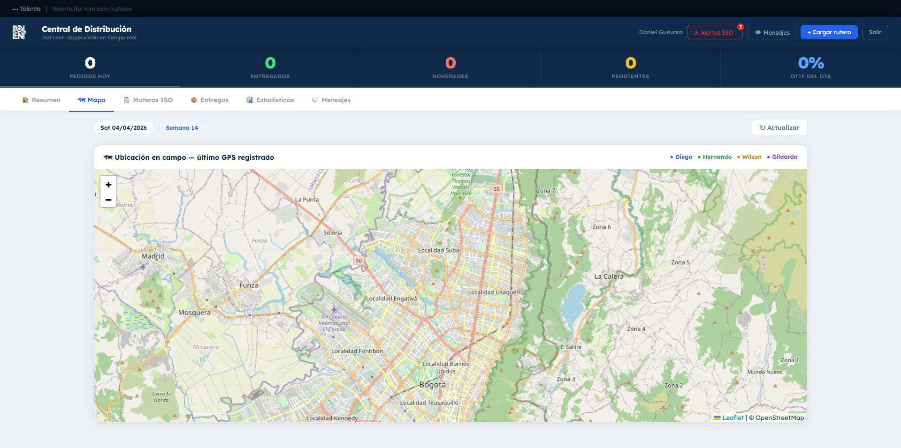
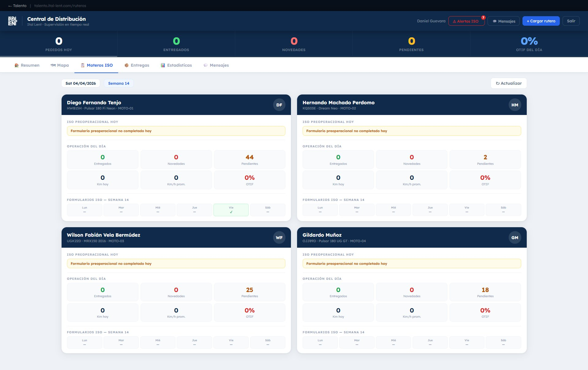
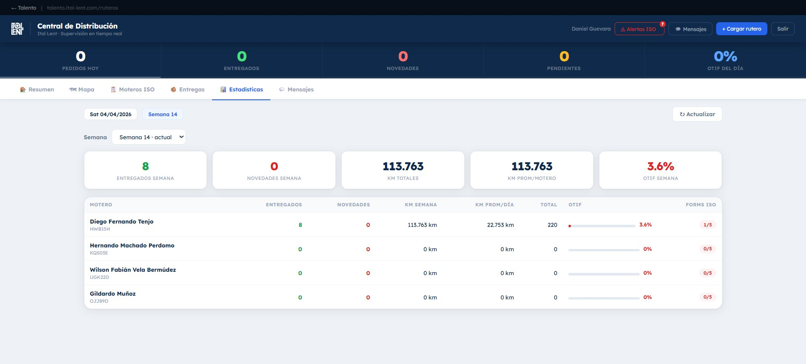
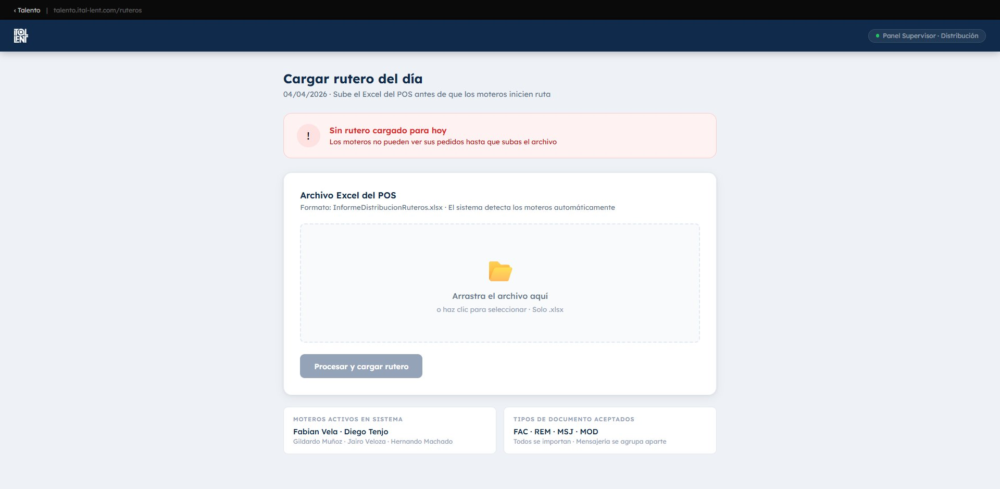
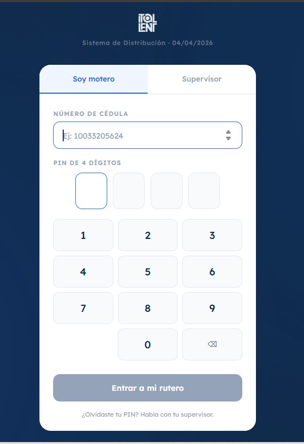
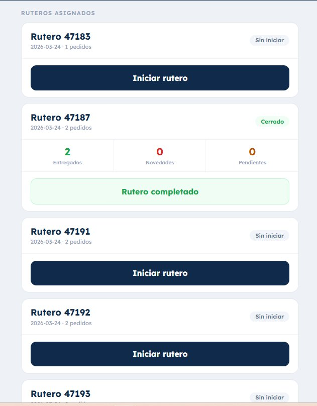
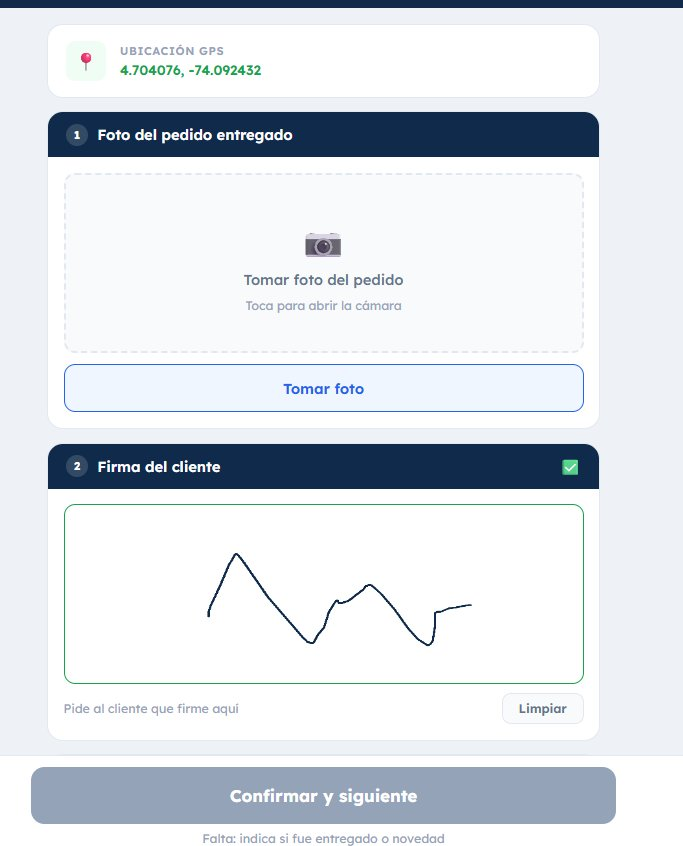

Supervisor · Resumen
Vista del día en tiempo real
Moteros en campo, pedidos entregados, novedades, pendientes y OTIF del día
Antes: un rutero en papel, km anotados a mano, sin GPS, sin comunicación con la moto. Si el cliente no estaba, el paquete volvía sin registro. Hoy: supervisión en tiempo real, GPS en campo, entrega con foto y firma, OTIF semanal y cero devoluciones sin trazabilidad.
El proceso de distribución existía solo en papel. Cada mañana los moteros recibían el rutero impreso del POS, salían a la calle y nadie sabía dónde estaban hasta que volvían.
Los kilómetros se anotaban a mano al final del día — sin verificación, sin historial real. Si un cliente no estaba en su local, el paquete volvía al centro de distribución sin ningún registro de por qué, cuándo, ni quién intentó la entrega.
No había forma de comunicarse con el motero en ruta sin llamar al celular personal. No existía el concepto de OTIF, ni tiempos, ni novedades. La distribución era una caja negra.








Este sistema funciona para cualquier empresa con moteros, vendedores en campo o técnicos de servicio. Si hoy no sabes dónde están ni qué están haciendo, puedo construirte esto.